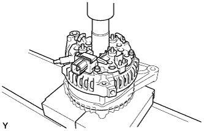
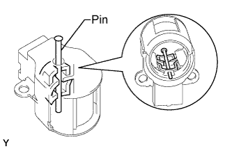
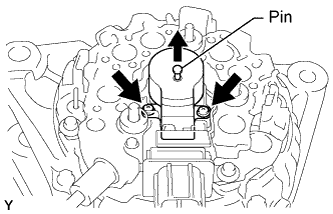
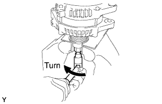

GENERATOR > REASSEMBLY |
| 1. INSTALL GENERATOR ROTOR ASSEMBLY |
Place the drive end frame on the rotor.
Install the rotor and washer.
| 2. INSTALL GENERATOR COIL ASSEMBLY |
 |
Using a 21 mm socket wrench and a press, push in the generator coil carefully.
 |
Install the 4 bolts.
| 3. INSTALL GENERATOR BRUSH HOLDER ASSEMBLY |
 |
While pushing the 2 brushes toward the inside of the brush holder, insert a pin (diameter: 1.0 mm (0.0394 in.)) into the brush holder hole.
 |
Install the generator brush holder with the 2 screws.
Pull out the pin from the generator brush holder.
| 4. INSTALL TERMINAL INSULATOR |
 |
Install the terminal insulator to the generator rectifier end frame.
| 5. INSTALL GENERATOR REAR END COVER |
Install the rear end cover with the 3 nuts.
| 6. INSTALL GENERATOR PULLEY |
 |
| SST 1-A and B | 09820-06010 |
| SST 2 | 09820-06021 |
Install the pulley onto the rotor shaft by tightening the pulley nut by hand.
Hold SST 1-A with a torque wrench, and tighten SST 1-B clockwise to the specified torque.
 |
Mount SST 2 in a vise.
Insert SST 1-A and B into SST 2, and attach the pulley nut to SST 2.
 |
Tighten the pulley nut by turning SST 1-A in the direction shown in the illustration.
Remove the generator from SST 2.
 |
Turn SST 1-B, and remove SST 1-A and B.
Turn the pulley and check that the pulley moves smoothly.